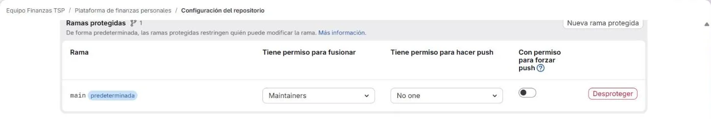
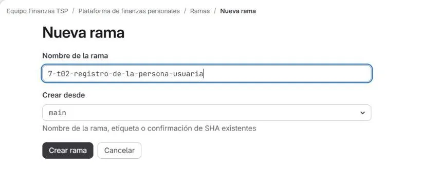
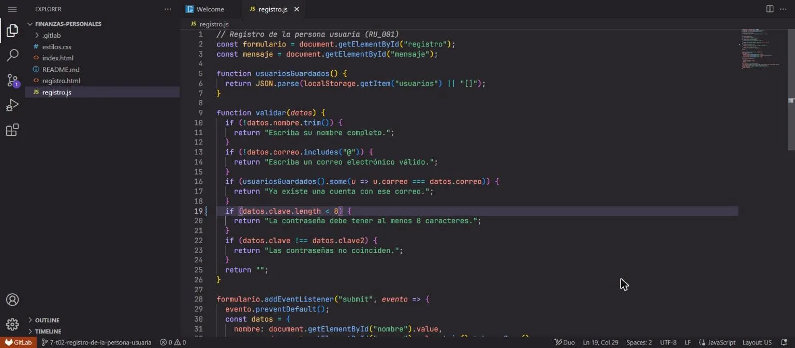
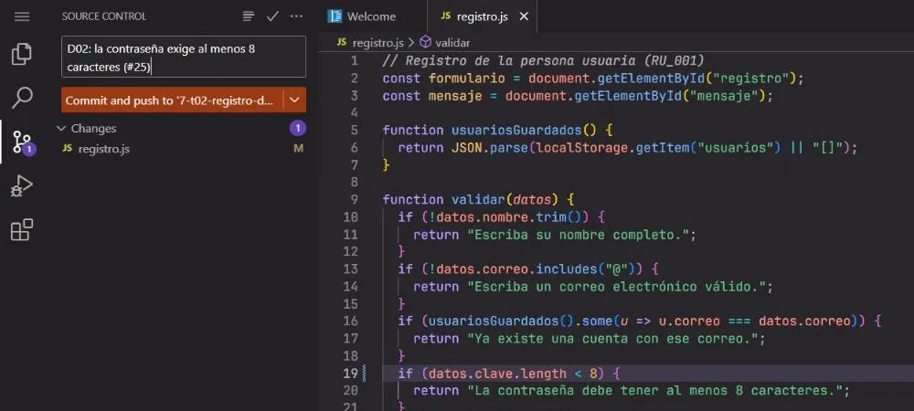
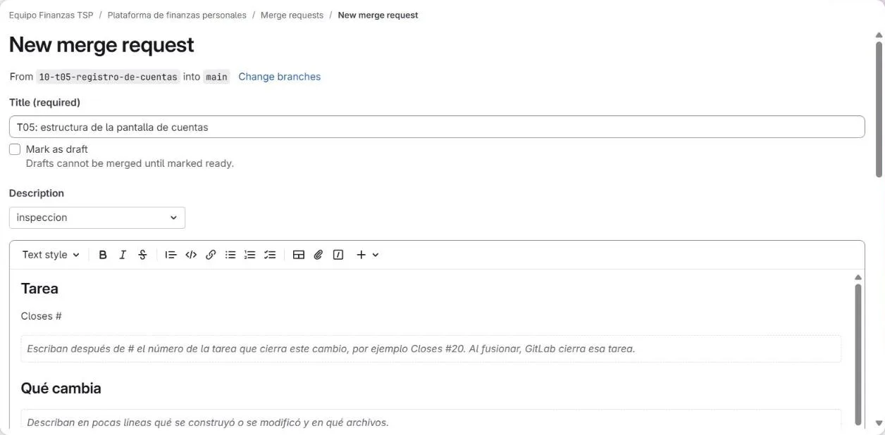
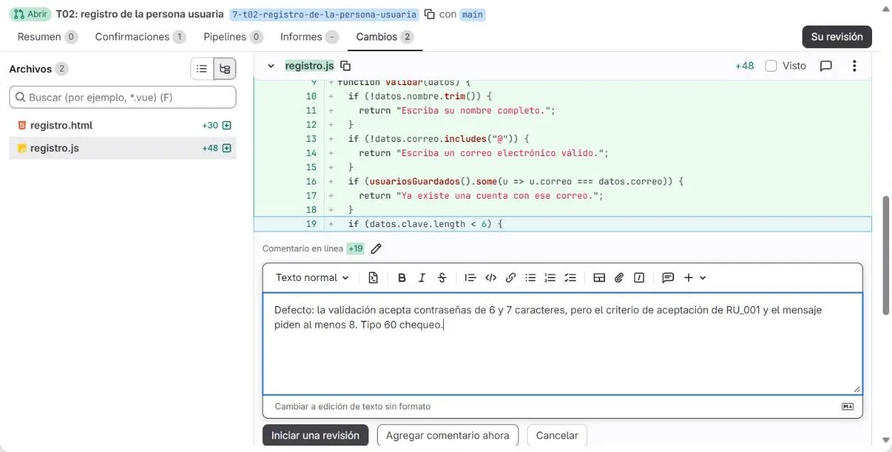
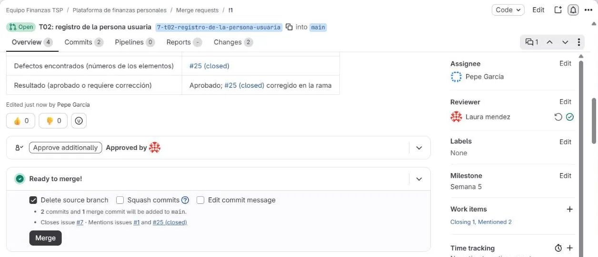
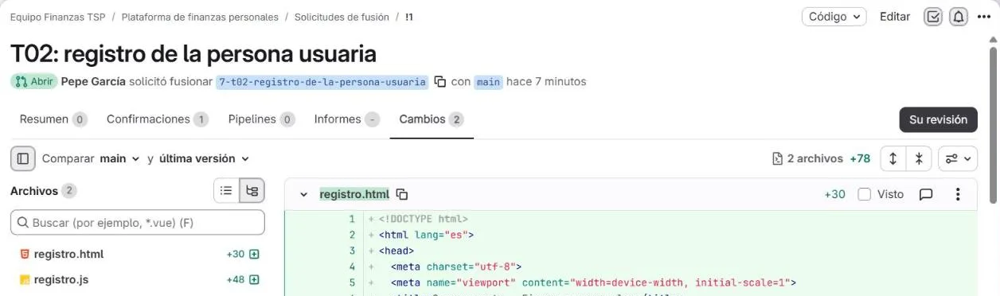
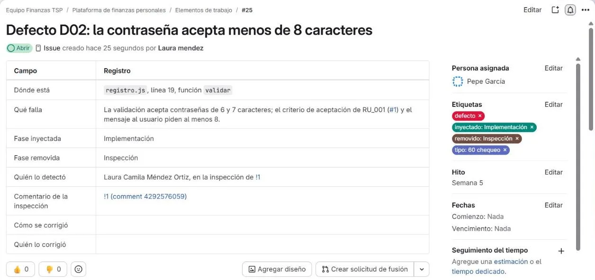

Conceptos del repositorio
El código del prototipo se guarda en el repositorio del proyecto en GitLab. El control de versiones registra quién cambió cada línea y cuándo, y por eso permite saber quién y cuándo inyectó un defecto (Lectura 8, sección 3). Estos son los términos que se usan en esta etapa:
| Concepto | Qué es | En GitLab |
|---|---|---|
| Repositorio | La carpeta del proyecto con todos sus archivos y la historia de sus cambios | Código (Code) > Repositorio (Repository) |
| Confirmación | Un cambio guardado en el repositorio, con su autor, su fecha y un mensaje que lo describe. También se le llama versión | Código > Confirmaciones (Commits) |
| Rama | Una línea de trabajo separada. La rama principal, main, tiene el producto aprobado; cada tarea se trabaja en una rama propia y se une a main cuando está lista | Código > Ramas (Branches) |
| Solicitud de fusión | La petición de unir una rama a main. Muestra las líneas que cambiaron y permite comentarlas, aprobarlas y fusionarlas | Código > Solicitudes de fusión (Merge requests) |
| Fusión | La incorporación de los cambios de una rama a main | Botón Fusionar (Merge) de la solicitud |
Recorrido de una tarea de implementación
| Paso | Quién | Fase del tiempo |
|---|---|---|
| Crear la rama de la tarea y programar | Responsable de la tarea | Implementación |
| Revisar el propio código con la lista de chequeo | Responsable de la tarea | Revisión de código |
| Crear la solicitud de fusión | Responsable de la tarea | Implementación |
| Inspeccionar los cambios | Dos compañeros | Inspección |
| Corregir los defectos encontrados | Responsable de la tarea | Corrección, en el elemento del defecto |
| Aprobar y fusionar | Revisor y responsable | Inspección e Integración |
Todo el tiempo de este recorrido se registra en la tarea, salvo el de las correcciones, que va en el elemento de cada defecto.
Plantilla de la solicitud de fusión
Qué es. Es el formato de la descripción de cada solicitud de fusión. Incluye la tarea que cierra, qué cambia, cómo se prueba, la revisión personal del autor y el registro de la inspección. Funciona como las plantillas de la etapa 1, pero se guarda en otra carpeta.
Para qué sirve. Hace que cada solicitud tenga los mismos datos y deja la inspección registrada junto al código inspeccionado.
.gitlab/merge_request_templates/inspeccion.md en el repositorio.Cómo se hace
- Creen el archivo
.gitlab/merge_request_templates/inspeccion.mdcon este contenido, de la misma forma que la plantilla del acta en la etapa 1:También pueden descargar el archivo.Cargando la plantilla…
- En la misma sesión, creen también el archivo
.gitlab/issue_templates/riesgo.mdde la etapa 3, si aún no lo tienen.
Rama principal protegida
Qué es. Una rama protegida no admite cambios directos: solo recibe cambios a través de una solicitud de fusión.
Para qué sirve. Así, todo el código que llega al producto pasa por una solicitud de fusión y, con ella, por la inspección.
Cómo se hace
- Abran Configuración > Repositorio y expandan Ramas protegidas. La rama
mainya aparece en la lista. - En la columna Tiene permiso para hacer push (Allowed to push and merge), elijan No one. En la columna Tiene permiso para fusionar (Allowed to merge), dejen Maintainers. Estas opciones aparecen en inglés aunque GitLab esté en español.

La rama mainrecibe cambios solo por solicitud de fusión.
main, incluidas las plantillas, entra por una solicitud de fusión.Listas de chequeo para la revisión personal
Qué es. La revisión personal es la que hace cada autor sobre su propio diseño o su propio código, antes de que lo use cualquier otra persona y antes de la inspección. Se hace con una lista de chequeo que reúne los tipos de defecto más frecuentes, y cada integrante la adapta a los errores que más comete (Lectura 8, sección 2.1).
Para qué sirve. Cuanto antes se detectan y se corrigen los defectos, menos esfuerzo requieren (Lectura 1, sección 5.1). TSP recomienda dedicar a revisar el diseño al menos la mitad del tiempo que se dedicó a diseñarlo (Lectura 8, sección 1.3).
Cómo se hace
- Creen en la wiki las dos páginas con el contenido de estos archivos, y ajústenlas a su proyecto: lista de revisión de diseño y lista de revisión de código.
- Al terminar el diseño o el código de una tarea, su responsable abre la lista y revisa su trabajo punto por punto. Registra el tiempo en la tarea con la fase
Revisión de diseñooRevisión de código. - Cada error que encuentra lo registra como defecto, como se explica en Defectos: tipo y fases, con la fase removida
Revisión de diseñooRevisión de código. - Cuando un tipo de defecto se repite, el gerente de calidad y proceso lo agrega a la lista, en la sección de defectos frecuentes del equipo.
Una rama por tarea
Qué es. Cada tarea de implementación se programa en una rama propia, que se crea a partir de main.
Para qué sirve. El trabajo de cada integrante queda separado mientras está en curso, y cada rama llega a main con su propia solicitud de fusión e inspección.
Cómo se hace
- Vayan a Código > Ramas y seleccionen Nueva rama (New branch).
- En Nombre de la rama (Branch name) escriban el número y el identificador de la tarea, en minúsculas y con guiones, por ejemplo
20-t05-pantalla-de-cuentas. En Crear desde (Create from) dejenmain. Seleccionen Crear rama (Create branch).
Rama nueva con el número y el identificador de la tarea.
#. Con él, cualquier integrante sabe a qué tarea corresponde cada rama.Programar en el editor web
Qué es. El editor web de GitLab (Web IDE) es un editor de código que se abre en el navegador, con la estructura de carpetas del repositorio a la izquierda. No requiere instalar nada en el computador.
Para qué sirve. Permite crear y modificar los archivos del prototipo y guardarlos como confirmaciones en la rama de la tarea.
.) en la página del repositorio.Cómo se hace
- Vayan a Código > Repositorio. En el selector de rama, arriba a la izquierda, elijan la rama de su tarea.
- Seleccionen Editar (Edit) > Web IDE. El editor se abre en una pestaña nueva.

El editor web: archivos a la izquierda y el código en el centro. Abajo a la izquierda aparece la rama en la que están trabajando. - Creen o modifiquen los archivos. Para crear uno, usen el ícono de archivo nuevo en el árbol de la izquierda.
- Para guardar los cambios en el repositorio, seleccionen el ícono de control de código fuente (Source Control) en la barra de la izquierda, el que muestra un número con la cantidad de archivos cambiados. Escriban un mensaje que describa el cambio, por ejemplo
T05: formulario de cuentas con validación de saldo, y seleccionen Commit and push a la rama de la tarea.
Confirmación de los cambios en la rama de la tarea. - Si el editor pregunta si desean crear una rama nueva o confirmar en la rama actual, elijan la rama actual, que es la de su tarea.
- Registren en la tarea el tiempo de programación con la fase
Implementación.
Solicitud de fusión
Qué es. Es la petición de unir la rama de la tarea a main. Reúne en una página las confirmaciones de la rama, las líneas que cambiaron y la conversación de la inspección.
Para qué sirve. Es el lugar de la inspección: allí los compañeros revisan el código línea por línea y, cuando lo aprueban, se fusiona. Al fusionarse, GitLab cierra la tarea.
Cómo se hace
- Antes de crear la solicitud, el responsable revisa su código con la lista de chequeo de revisión de código y registra el tiempo con la fase
Revisión de código. - Vayan a Código > Solicitudes de fusión y seleccionen Nueva solicitud de fusión. En Rama de origen (Source branch) elijan la rama de la tarea; en Rama de destino (Target branch),
main. Seleccionen Comparar ramas y continuar (Compare branches and continue). Si GitLab muestra arriba un aviso con el botón Crear solicitud de fusión para su rama, pueden usarlo directamente. - En el título escriban el identificador y el nombre de la tarea, por ejemplo
T05: pantalla de cuentas. - En Descripción, en la lista de plantillas, elijan
inspeccion. En la líneaCloses #escriban el número de la tarea, por ejemploCloses #20, y completen Qué cambia, Cómo se prueba y la revisión personal.
Solicitud de fusión con la plantilla de inspección y la tarea que cierra. - En Persona asignada (Assignee) pónganse ustedes mismos; en Revisor (Reviewer), a uno de los dos inspectores. Asignen el hito de la semana. Dejen marcada la opción de eliminar la rama de origen al fusionar.
- Seleccionen Crear solicitud de fusión (Create merge request). En la descripción publicada,
#20queda enlazado a la tarea.
Inspección
Qué es. La inspección es una revisión detallada y estructurada del trabajo de un integrante, hecha por su autor y dos compañeros. Cada inspector revisa el producto por su cuenta para encontrar defectos; la inspección identifica los defectos y la corrección se hace después (Lectura 8, sección 2.2).
Para qué sirve. Encuentra los defectos que el autor no vio en su revisión personal, antes de que lleguen al producto. TSP recomienda revisar máximo 150 líneas nuevas o modificadas por hora; a una velocidad mayor, muchos defectos pasan sin detectarse (Lectura 8, sección 1.2).
Cómo se hace
- El autor presenta brevemente el cambio a los dos inspectores: qué hace, qué archivos tocó y cómo se prueba. Puede hacerlo en la reunión semanal o en una sesión corta.
- Cada inspector abre la solicitud de fusión y la pestaña Cambios (Changes). Allí se ven en verde las líneas agregadas y en rojo las eliminadas. Calculen el tiempo mínimo de inspección: líneas agregadas dividido entre 150 da las horas.
- Cuando un inspector encuentra un defecto, pasa el cursor sobre el número de la línea, selecciona el ícono de comentario y escribe qué está mal. Seleccionen Iniciar una revisión (Start a review) en el primer comentario y Agregar a la revisión (Add to review) en los siguientes.

Comentario de inspección sobre la línea donde está el defecto. - Al terminar, el inspector selecciona Su revisión (Your review), escribe un resumen y envía la revisión. Si encontró defectos, elige la opción de solicitar cambios; si no, solo comenta.
- Cada inspector registra su tiempo en la tarea con la fase
Inspección, y escribe su tiempo en la tabla de inspección de la descripción. - El autor registra como defecto cada comentario que señala un error, con la fase removida
Inspección, y escribe sus números en la tabla de inspección.
Aprobación y fusión
Qué es. La aprobación es la confirmación del revisor de que el código está listo; la fusión incorpora el código a main.
Para qué sirve. Solo llega al producto el código inspeccionado y aprobado. Al fusionar, GitLab cierra la tarea indicada en Closes # y así el plan refleja el avance.
Cómo se hace
- El autor corrige los defectos en la misma rama, con el editor web, y registra el tiempo de cada corrección en el elemento del defecto, con la fase
Corrección. Al terminar cada corrección, cierra el defecto. - Los inspectores verifican las correcciones. Cuando todo está bien, el revisor selecciona Su revisión > Aprobar (Approve). GitLab no permite que el autor apruebe su propia solicitud.

Solicitud aprobada por el revisor, lista para fusionar. - El autor completa en la tabla de inspección el resultado y selecciona Fusionar (Merge). La tarea se cierra y la rama se elimina.
- El autor registra en la tarea el tiempo de la fusión y de verificar que el producto sigue funcionando, con la fase
Integración.
Tamaño del producto
Qué es. TSP mide el tamaño del producto en líneas de código. Para seguir el crecimiento del producto se cuentan las líneas agregadas y modificadas (Lectura 7, sección 2.1).
Para qué sirve. Con el tamaño se calcula la densidad de defectos, que es la cantidad de defectos por cada mil líneas nuevas y modificadas (Lectura 8, sección 1.1), y la tasa de inspección, que es la cantidad de líneas inspeccionadas por hora (Lectura 8, sección 1.2). Con estos datos, el equipo estima mejor sus próximos proyectos.
Cómo se hace
- Al crear la solicitud de fusión, abran la pestaña Cambios y lean el número de líneas agregadas.

La pestaña Cambios indica las líneas agregadas y eliminadas en la solicitud. - Escriban ese número en la tabla de inspección de la descripción.
El generador de evidencias de la etapa 5 lee estos datos de todas las solicitudes y calcula el tamaño total, la densidad de defectos y la tasa de inspección.
Defectos: tipo y fases
Qué es. En la etapa 2 registraron los errores como elementos con la etiqueta defecto. Desde esta etapa cada defecto lleva además tres etiquetas: su tipo, la fase en que se inyectó y la fase en que se removió. Con ellas se mide la calidad del producto: dónde se introducen los defectos, dónde se encuentran y cuánto cuesta corregirlos (Lectura 8, secciones 1 y 3).
Para qué sirve. Al contar los defectos por tipo y por fase, el equipo identifica qué errores comete con más frecuencia y en qué fase conviene reforzar la revisión.
Tipos de defecto
Esta es la clasificación estándar de PSP. Cada tipo es una etiqueta:
| Etiqueta | Qué incluye |
|---|---|
tipo: 10 documentación | Comentarios, mensajes y textos |
tipo: 20 sintaxis | Ortografía del código, puntuación, formato de las instrucciones |
tipo: 30 construcción | Control de versiones, librerías, empaquetado |
tipo: 40 asignación | Declaraciones, nombres duplicados, alcance de variables, límites |
tipo: 50 interfaz | Llamadas entre componentes, entrada y salida, pantallas y formatos de usuario |
tipo: 60 chequeo | Mensajes de error y validaciones faltantes o incorrectas |
tipo: 70 datos | Estructura y contenido de los datos |
tipo: 80 función | Lógica, ciclos, cálculos, recursión |
tipo: 90 sistema | Configuración, tiempos de respuesta, memoria |
tipo: 100 entorno | Problemas de las herramientas de diseño, programación o pruebas |
Fase inyectada y fase removida
- Fase inyectada: la fase en que se cometió el error. Etiqueta
inyectado:seguida de la fase, por ejemploinyectado: Implementación. - Fase removida: la fase en que se encontró y se corrigió. Etiqueta
removido:seguida de la fase, por ejemploremovido: Inspección.
Escriban la fase exactamente como aparece en la tabla de fases de la etapa 2. Una persona del equipo crea las diez etiquetas de tipo al iniciar esta etapa; las de fase se crean en Administrar > Etiquetas la primera vez que se necesitan.
Cómo se registra un defecto
- Creen un elemento de tipo Issue con un título como
Defecto D04: el saldo acepta valores negativos. - En la descripción indiquen dónde está el defecto (archivo y línea, o documento), qué falla, quién lo detectó y, si viene de una inspección, el enlace al comentario de la solicitud de fusión.
- En el panel derecho pongan las etiquetas
defecto, la de tipo, la de fase inyectada y la de fase removida; el hito de la semana; y en Persona asignada, a quien lo corrige. Seleccionen Crear issue.
Un defecto encontrado en la inspección, con su tipo y sus fases. - Quien lo corrige registra el tiempo en ese elemento con la fase
Correccióny lo cierra cuando la corrección está hecha.
Trabajar con Git en el computador
Quienes ya usan Git en su computador pueden trabajar así en lugar del editor web. El recorrido de la tarea es el mismo: una rama por tarea, confirmaciones con mensajes que identifiquen la tarea y una solicitud de fusión con la plantilla de inspección.
git clone https://gitlab.com/grupo/proyecto.git cd proyecto git switch -c 20-t05-pantalla-de-cuentas # programar y guardar los archivos git add . git commit -m "T05: formulario de cuentas con validación de saldo" git push -u origin 20-t05-pantalla-de-cuentas
La primera vez que GitLab pida usuario y contraseña desde la terminal, usen su usuario de GitLab y, como contraseña, un token personal con el alcance write_repository. La etapa 5 explica qué es un token y cómo se crea.
Verificación de la etapa
Al terminar esta etapa, su proyecto debe tener:
- La rama
mainprotegida, con el código del prototipo. - La plantilla
inspeccionde solicitud de fusión y las listas de chequeo en la wiki. - Una solicitud de fusión por cada tarea de implementación, con
Closes #, la tabla de inspección completa, comentarios de los inspectores, aprobación y fusión. - En cada tarea, el tiempo con las fases
Implementación,Revisión de código,InspeccióneIntegración. - Los defectos con sus etiquetas de tipo, fase inyectada y fase removida, y el tiempo de su corrección.